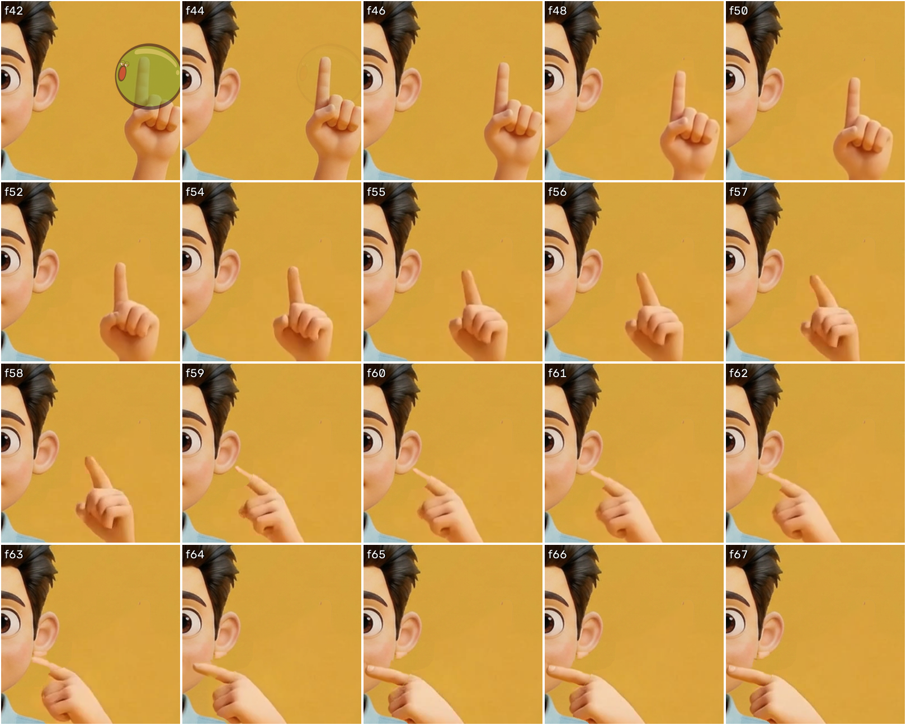

11/24 · 北浦先生のご指摘（11/24 11:08）への直し
v31（耳のびりびりと、耳の横を通る指の直し）
左 v30・右 v31
耳と指・4倍・半分の速さ 約20秒。
手と顔・2倍・通常の速さ 音あり。
v31 単体 10秒・音あり。
- ご指摘1「指が耳を通るところで指が変」：コマ 59〜64・77〜79（2回目・3回目も同じ）。腕の層の「顔の範囲」の境目（耳の右）で、指を古い層から取っていたため、指に段がつき、細く白っぽくなり、指先の横に2つ目の耳たぶが出ていた。→ 指を「頭の動きを戻した動画」から取り直した（指の形は4〜5倍で目で読んだ）。
- ご指摘2「指が口元を指すところで耳辺りがびりびり」：コマ 66〜76。動画の耳たぶ（止めた絵より長い）が毎コマ形を変えて貼られていた。→ 耳のまわりは止めた絵のまま動かさない。耳たぶの所のコマ間差は 0 になった（v30 は最大1.6）。
- 確かめ（数字）：v30 と違うのは63コマの、耳と指の所（x 1004〜1138、y 284〜396）だけ。動き・タイミング・口・口角・声は v30 のまま。
- 残る所：指先が耳たぶに触れるコマ（61・62）の小さな影は元の動画のもの。上へ戻る所が速いのは v30 と同じ。費用は0ドル。
11/20 · 現時点の最良候補
v30（腕と指は v29、口と口角は v28）
左 v28・右 v30
動き出し〜指が口に着くまで・半分の速さ
手と顔・2倍・通常の速さ 音あり。
v30 単体 10秒・音あり。
- v29 の口角（しわが口に引っ付いて動く）は取り消し、v28 の口と口角に戻した。腕と指は v29（動きの真ん中の指の崩れを直したもの）。
- 確かめ（数字）：v28 と違うのは、指の崩れを直したコマ（58〜61、118〜121、178〜181）の腕と指の所（x 1055〜1318）だけ。v29 と違うのは、口と口角の所（x 903〜1011、y 323〜371）だけ。
- 費用は0ドル（新しい注文なし）。
11/20 · 現時点の最良候補
v29（動きの真ん中の指の崩れと、口角のエクボを直した版）
左 v28・右 v29
動き出し〜指が口に着くまで・半分の速さ
口と口角・4倍・半分の速さ
手と顔・2倍・通常の速さ 音あり。
v29 単体 10秒・音あり。

指の一覧（f42〜f67） 全コマで指が崩れていないことの確認用。
- 指の崩れ：v28 のコマ 58〜60 は、指が大きく回る所（元の動画のコマ 51→53）を RIFE で作った中間の絵で、指先が細く透けていた（どの設定でも崩れた）。そこだけ合成をやめ、本物のコマ（51・53）を使い、続く2コマは崩れない組（53→54）の間で作った（3回とも）。動きのなめらかさは v28 のまま、その1歩だけ少し大きい。
- 口角のエクボ：しわの無いきれいなほおの止めた絵を1枚だけ作り（しわの影と横の明るいふくらみを消す）、口が開いている間は口角の外をそれを土台にし、閉じた口のしわの線（影の分だけ）を口角の動きに合わせてずらして描いた。元の場所の丸い跡・明るい点・縦の筋は出ていない。左はごく薄い影が口角の外に残る。
- 名前の区間は v28 と差0。指が口に着くコマ・口の時刻は同じ。費用は0ドル（新しい注文なし）。
- まだ残る所：上へ戻る所が速い（コマ 79→80 ほか）、手首の下の細い白い筋、ひじの袖の切れ目。
11/20 · 現時点の最良候補
v28（動き出しから指が口に着くまでの動きと、口角のエクボを直した版）
左 v27・右 v28
手と顔・2倍・通常の速さ 音あり。
動き出し〜指が口に着くまで・半分の速さ
口と口角・4倍・半分の速さ
v28 単体 10秒・音あり。
- 動き出しの1秒：v27 は、切り替えのあと手がほぼ止まり（8コマ）、コマ 59 で急に跳んでいた（手首 13.6px、ひじ 6.7px／コマ）。止めた絵の手から指が口に着くコマ（f66）まで、腕のコマを1本のなめらかな曲線で割り当て直し、間の絵を RIFE で作った（3回とも）。止まり・跳びは無くなった（手首は最大 6px／コマ）。指が口に着くコマと口の開閉の時刻は同じ。
- 口角のエクボ：口角の外のしわ（そのコマの絵で測った濃さだけ）を、口角の動きに合わせて一緒に動かした。左右同じ作り方で、右の鏡写しはやめた。置き去りのしわ・明るい点・継ぎ目は出ていない。
- 名前の区間は v27 と差0。v26 の指の下のくぼみの直し（FLUX）は、指が口の横にいるコマに貼り直した。費用は0ドル（新しい注文なし）。
- まだ残る所：上へ戻る所が速い（コマ 79→80 ほか）、手首の下の細い白い筋、ひじの袖の切れ目。
11/20 · まとめ
修正の軌跡と、次は最短で v27 の質にする手順
全文（引き継ぎ用）：O_history_and_recipe.md
軌跡（要点）
- 採用：v18 肩の帯／v20 口（線の読み直し＋縦8倍）／v21 2回見せの補間・指の横のかたまり／v23 指のまだら（マスクを閉じる）／v26 くぼみ（FLUX.3 で1回、約0.04ドル）／v27 動き出し・エクボ。
- 不採用：口の試し（v19 の3回）、上へ戻る所の補間・ブラー、くぼみの自動の縁さがし（3回）、VACE（窓口が廃止済み）。
- 遠回りの理由：原因を見る前に直し方を重ねた／似た色の縁を自動で探した／元の動画（2回見せ・割れたコマ）を確かめなかった／道具の窓口の生死を確かめなかった。
次の最短手順（目安 半日）
- 先に確かめる：元の Wan の fps・コマ数・のばし方、割れたコマ、道具の窓口。
- 腕と手：2回見せは RIFE、手のマスクは閉じて埋める、帯はシャツの上のシャツだけ、動き出しは止めた絵の手から直接つなぐ。
- 口：O を C に合わせる、線は 8倍・16倍で読む、口角を横にも動かす、縦8倍で描く、しわは鏡写し。
- 指が口に来る所：かたまりは口の絵で埋める、くぼみは FLUX.3 で切り出して1回だけ描き直して貼り戻す。
- 確かめ：部分ごとのコマ差の表、範囲外の差0、4倍の横並び、最後は人の目。
11/20 · 現時点の最良候補
v27（動き出しのカクカクと、ほおのエクボを直した版）
左 v26・右 v27
手と顔・2倍・通常の速さ 音あり。
動き出し・2倍・半分の速さ Ozzie が消えて手が動き出す所（1.5〜2.5秒）。
口とほお・4倍・半分の速さ
v27 単体 10秒・音あり。
- 動き出し：Ozzie が消えたあと、止めた絵の手から動画の手に切り替わる所で 14px 跳び、そのあとの数コマも元の動画の揺れで動きが不ぞろいだった。止めた絵の手から腕のコマ 30 までを RIFE で直接つなぎ、ゆっくり動き出してなめらかに速くなるようにした（3回とも、8コマずつ）。手の始まりの位置、口に着くコマは同じ。
- エクボ：口の右のほおに残っていたのは、止めた絵（笑った口）の口角のしわ。口が開いている間だけ、そこを左のほおの鏡写しにした（開き具合に合わせて出し入れ）。指が上にある所は指の形を残すため触っていないので、指が口の横にいる間は、指先の上にごく薄く残る。
- 費用：0ドル（新しい注文なし）。v26 の FLUX の直しはそのまま。
- まだ残る所：上へ戻る所が速い（コマ 79→80 ほか）、手首の下の細い白い筋、ひじの袖の切れ目。
11/20 · 現時点の最良候補
v26（ほおのくぼみを FLUX.3 で描き直し）
左 v23・右 v26
ほおと指・6倍・半分の速さ 指が口の横に来た所（3回とも）。
手と顔・2倍・通常の速さ 音あり。
v26 単体 10秒・音あり。
- やったこと：1回目の指が口に来る区間（1.2秒）のほおと指のまわりを切り出し、FLUX.3 Edit Video（fal、0.03ドル/秒）で「ほおのくぼみ・段差を消す」描き直しを1回。結果のうち、指の真下のほお（くぼみの所）だけを貼り戻し、2回目・3回目にも同じ直しを使った。
- 結果（4倍で確認）：くぼみ（縦の段差）は消え、ほおがなめらかにつながった。指の形・口・色は v23 と同じ。v23 と違う画素は、3回の指が口に来るコマ（87コマ）の、x 973〜1052・y 328〜429 の中だけ。名前の区間ほかは v23 と差0。
- 費用：今回 約0.04ドル（台帳は見込みの0.06ドルで記録）。O の合計 6.36ドル／予算 6.44ドル。
- まだ残る所：上へ戻る所が速い（コマ 79→80 ほか）、手首の下の細い白い筋、ひじの袖の切れ目（v23 と同じ）。
11/20 · ほおのくぼみ
v23 か v24 か（未決）
左 v23・右 v24
ほおと指・6倍・半分の速さ 指が口の横に来た所（2.7秒・5.2秒・7.7秒のあと）を見てください。
手と顔・2倍・通常の速さ 音あり。
v24 単体 10秒・音あり。
- くぼみの原因：指先の真下で、動画のほお（右）と止めた絵のほお（左）が縦にまっすぐ切り替わる所の明るさの段差。
- v24：指の形はそのまま、線より右の動画のほおの明るさ・色を止めた絵にそろえた。くぼみの暗さは薄くなったが、線そのものは残る。指先が少し白っぽくなった（コマ 66・126）。
- 指の下の縁を探して切る方法は2回とも指が細くなる・消えるため不採用。
0 · 現時点の最良候補
v23（v17 と同じ手の動き・速さ）
左 v17・中 v22・右 v23
手と顔・通常の速さ 音あり。
口と指・4倍・半分の速さ 左 v17・右 v23。
v23 で直っている所
- かくかく（同じ絵が続いた18コマを補間）
- 口の開閉の跳び・左の三角の影
- 指の横の四角いかたまり
- 指の色のまだら（手のマスクから、頬と似た色の部分が抜けていた）
- 肩の付け根の白い帯とボタンの影
まだ残る所
- 上へ戻る所が速い（コマ 79→80、2回目・3回目も）。元の Wan の動きです。補間・ブラーとも指が二重・三重になり、使えませんでした。
- 手首の下の細い白い筋（コマ 66・72）
- ひじの袖の下が赤線の境目で平らに切れる（コマ 58 ほか）
名前の区間（口は止まったまま）・顔・カード・背景・声は v17 と差0 です。点検（部分ごとのコマ間の差と4倍の画像）で、v17 より悪くなった所は見つかっていません。
1 · 作り方の過程
v17 ができるまでの4段階
左上に段階とコマ番号が出ます
1. Wan が作った元の動画 3秒・30コマ/秒・90コマ。手が下りて口の横で止まり、上に戻ります。
2. v1 でのばした動画 114コマ。速い所に同じ絵を2回ずつ入れてのばしました（印つき）。これが「かくかく」の元です。
3. 止めた絵に腕だけ貼った層 v17 が使った層。頭は止めた絵、赤線の中の腕だけが動画です。
4. 仕上がりの比較 左 v17・中 v21・右 v22（手と顔、通常の速さ、音あり）。
2 · 版の比較
どれも左が v17、右が新しい版です
手と顔は2倍・通常の速さ、口と指は4倍・半分の速さ
v17 と v20：手と顔
v17 と v20：口と指
v17 と v21：手と顔
v17 と v21：口と指
v17 と v22：手と顔
v17 と v22：口と指
| 版 | 直したこと | 残っていること |
|---|
| v17 | 先生に出した版 | かくかく、指の横の四角いかたまり、口の開閉の跳びと左の三角の影、肩の跡 |
| v20 | 口の開閉（線を読み直し、縦8倍で描いて面積平均）、肩の付け根の跡 | かくかく、指の横のかたまり |
| v21 | 2回見せの18コマを補間（RIFE 4.25、手元・無料）、指の横のかたまり | 口の開閉、肩の跡 |
| v22 | v20 と v21 の両方 | 上へ戻る所が速い（コマ 79→80、元の Wan の動き）、指の色のまだら、ひじの袖の切れ目 |
3 · かくかくの原因
v1 で動きをのばした時の「2回見せ」
- 元の Wan の動画は 30コマ/秒・90コマ（3秒）です。v1 で 114コマにのばした時、速く動く所（手を下ろす所・上へ戻る所）に同じ絵を2回ずつ入れました（19コマ）。
- そのため v17 では、同じ絵が2コマ続く所が 1回の上下で5〜6か所あり、動く・止まるが交互になって 10コマ/秒のアニメのように見えます。
- v21・v22 では、その所を前後の真ん中の絵（補間）に替えました。補間すると指先に細い尾が出た1か所（コマ 61 と2回目・3回目）は、2回見せのまま残しています。
- 元の動画には、指先が2本に割れたコマが1つあります。v17 も v21・v22 も使っていません。
4 · 進めない案
案A（Wan の元の動画を丸ごと土台にする）は進めません
- 先生が OK した v17 の手の動きと速さが変わってしまうためです。
- 「N は動画を丸ごと使った」という説明は誤りでした。N も、止めた絵に Wan の腕を重ねる作り方で、C1 は口だけの差し替えです。
- 有料の新しい生成はしません（見積もりだけ作ります）。
5 · 残る所を直す場合の見積もり
作っていません（承認が出るまで使いません）
| 方法 | 中身 | 費用（fal の 11/19 の表示） |
|---|
| 無料：補間・ブラー | 上へ戻る所を補間で増やす・ブラーをかける | 0ドル。試したが、指が約90度回る動きを作れず二重になるため不可 |
| Wan 3.0（始めと終わりの絵を指定） | 口の横の手から指を立てた手までの間だけを作り直し、v17 と同じコマ数に当てはめる。タイミングは変えない | 1080p で 1秒 0.20ドル。3秒×3本で約1.80ドル |
| Kling v2.1 pro（終わりの絵を指定） | 同じ使い方 | 5秒 0.49ドル×3本で約1.47ドル（廃止予定の表示あり） |